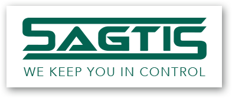
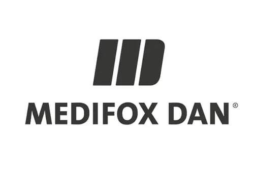
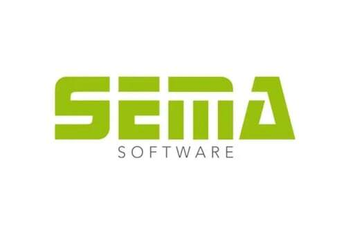
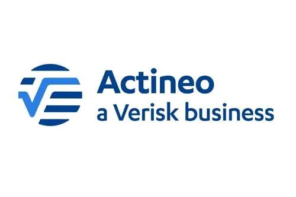
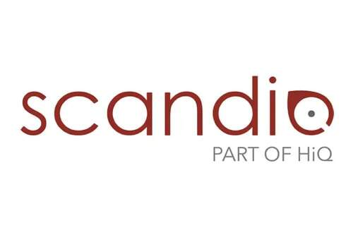
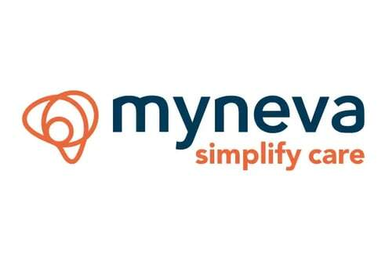
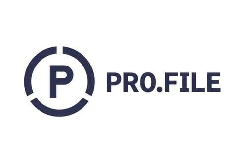
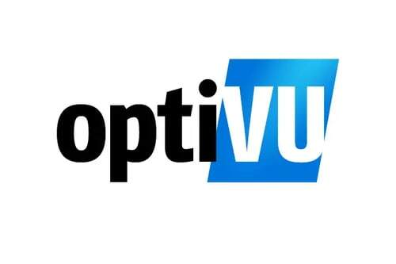
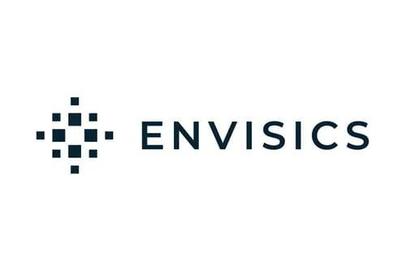
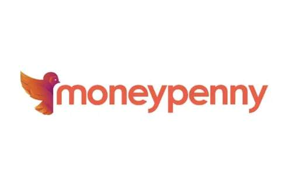

7 Fragen, rund 3 Minuten. Danach sehen Sie die zwei, drei Punkte, auf die ein Käufer bei Ihnen zuerst schauen würde, und warum. Vertraulich, ohne Unterlagen.
Check startenIhre Kontaktdaten fragen wir erst am Ende ab. · Entwickelt von Steven Manja, über 10 Jahre M&A und Unternehmensbewertung.
* Gezeigte Transaktionen & Statistiken beziehen sich auch auf die Tätigkeit des Gründers bei anderen Firmen.
Im Mittelstand liegt der Multiplikator typischerweise zwischen dem drei- und achtfachen Gewinn. Schieben Sie den Regler auf Ihren Gewinn und sehen Sie, wie groß die Spanne ist.
Veranschaulichung der typischen Spanne laut exitready.de, keine Bewertung Ihres Unternehmens. Ergebnisse hängen vom Unternehmen und der Marktsituation ab.
Finden Sie heraus, was Sie bei sich nach unten zieht. Check starten
„40 Prozent Ihres Umsatzes hängen an einem Kunden. Was passiert, wenn der wegbricht?“ Damit ist der Multiplikator einen Punkt tiefer.
„Ohne Sie läuft hier nichts. Sie bleiben noch zwei Jahre an Bord.“ Verkauft, aber nicht frei.
Was Sie nicht belegen können, kann ein Käufer nicht prüfen. Und was er nicht prüfen kann, zieht er vom Preis ab.
Rund 3 Minuten. Zu jeder Frage erfahren Sie, warum sie für den Preis zählt.
Sie sehen sofort die 2–3 Punkte, auf die ein Käufer bei Ihnen zuerst schauen würde.
Wenn Sie möchten, geht Steven Manja Ihre Punkte mit Ihnen durch. Kostenfrei und unverbindlich.
Ergebnisse und Stimmen
Das beste Angebot lag bei 4× EBITDA, branchenüblich. Exit Ready ließ das Team für Photovoltaik auf Flachdächern zertifizieren und machte daraus eine belegbare Wachstumsstory. Kein Euro mehr Gewinn.
„Exit Ready® hat die vorher verstreuten Zahlen zu einem klaren Gesamtbild zusammengeführt. Gleichzeitig blieben mehrere Optionen bewusst offen, statt den Prozess auf einen einzigen Weg festzulegen.“

Gary Hagen„Ich würde ihm die PIN meiner EC-Karte anvertrauen!“
„Die strukturierte Vorbereitung und die persönliche Unterstützung auch durch Herrn Manja haben uns im gesamten Verkaufsprozess Sicherheit gegeben.“
„Schon im ersten Gespräch überzeugten uns der wertvolle Input und der pragmatische, lösungsorientierte Ansatz.“
„Er war stets ansprechbar und wir konnten durch seine qualifizierte Unterstützung schnell Ergebnisse erzielen.“









Quelle aller Stimmen und Zahlen: exitready.de. Ergebnisse einzelner Mandanten sind nicht auf jedes Unternehmen übertragbar.
Nein. Ihre Angaben werden vertraulich behandelt und nicht weitergegeben. Für den Check und das Erstgespräch brauchen Sie keine Unterlagen.
Nein. Sie müssen heute nicht verkaufen wollen. Je früher Sie wissen, wo Sie stehen, desto freier bestimmen Sie später, wann, an wen und zu welchem Preis.
Nichts. Der Check und das Erstgespräch sind kostenfrei und unverbindlich.
Für Inhaber und Mehrheitsgesellschafter mit mindestens 1 Mio. € Jahresumsatz. Wer darunter liegt, erhält eine passende Ressource statt eines Termins.